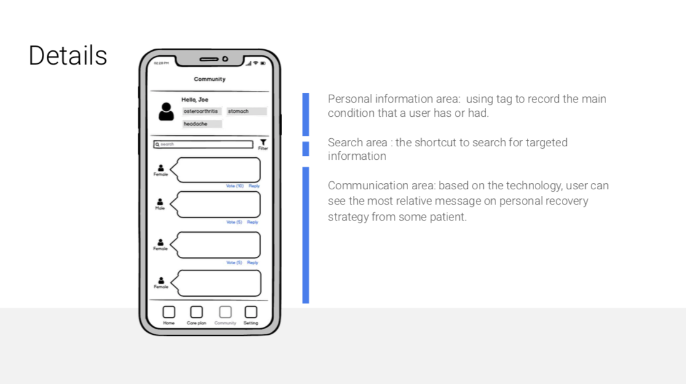
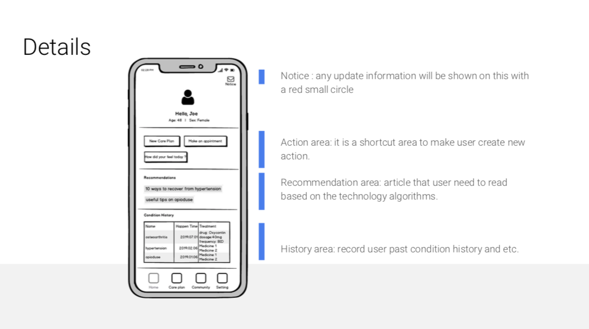

iHealth
iHealth is a mobile app that take care of your health journey. It provides three functions - health care plan, community self-help and recommendation material based on ML.
Users can use iHealth to connect your data with EHR system to record and track your health and build care plan with the help of health carer stakeholders including nurses, doctors and third party. And also users can embed a community where you can communicate and absorb others strategies to recover from the same conditions and do not worry the confidential.
Research Phase
I started the project with problem definition.There are two problems existing on the medical health system.First,preventable harm(eg.med errors) causes up to 1000 deaths/day. Second, $210 billion wasted on unnecessary services and $130 billion on inefficient services/year.The reason behind two problems is the pressure to meets quality measures without resources or support to meet those demands. The solution I provided is reengineering care delivery process.
User Modeling - Persona
I started interviewing the relative persons, for example, a nurse.The interview included open-ended questions and follow-up questions.
From the interview, I, as an outlier, built a clear map towards our users. The pattern of the product I intended to design has emerged. It would focus on solve these problems: information track system,data visualization for hints, double check system for security and connection system.
User Stories
Then, user stories were built to converge our problems.
As a nurse, the first and foremost things we usually do is double check. Also, we rely on the computer, but we cannot trust them one hundred percent. Our work operation book tell us - never feel unnecessary when you do the double check. When I gave injection to a patient, I not only checked the medicine printed record but also need to check the doctor instruction record to make sure, it is the right injection for the right patient. These records are from one system but two channels, I get medicine from our working assignment channel and get doctor instruction from patient channel. I need to check these two and then take injection action to the patients. It is a time-consuming process but I have to do that. I hope one day there can have some way to simplify these double check process but also make sure no mistake will happen.
Although technology is a big help in our work, as a nurse, I will feel anxious when sometimes internet cannot work. Our database is on the cloud which means once we cannot connect to the Internet, we cannot do anything except some traditional treatment to the patient. Once in a while, our IT supporter might take half an hour to get our database connected. It is a little tricky to see both our patients and us wait there to get computer recover. We all know it is essential to get every data store in the cloud which can provide security to the data but we really hope there can be a database in our local computer but also provide security as well. We can make our work smooth when internet cannot work.
Every morning, we will have a morning standup meeting which we exchange information towards patients situation with the previous group of nurses. Then, we settle our nurse clothes and prepare for one-day work. We get our task assignment from our computer which mark the doctor instruction for every patients. I, as injection nurse, will be assigned the work towards all the injection patient. I will get the injection lists and then click patient record to get the doctor instruction printed to check both of these two are matched. Then I will push my carts to every patient and make injection action to the assigned patient. Except for injection, I also need to make observation towards patient to deduct whether they are in good condition. When there is some situation, I will notify the doctor at once.
Design Phase
Design notes were taken as a hint on my design draft process. Below are the five things I need to solve :
Refinement
I made a commuication with our client when first design draft came out. The feedback I got from the client made me change the direction of the product. There are two changes happening. First, focus on patient care record.Second,focus on health journey.
 Final Design
I made a commuication with our client when first design draft came out. The feedback I got from the client made me change the direction of the product. There are two changes happening. First, focus on patient care record.Second,focus on health journey.
Under Construction...